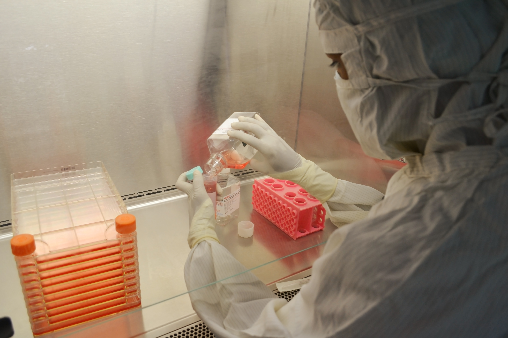

화학공학과 직무에는 여러가지가 있겠지만 내가 관심이 있는건 생산관리, 품질관리, 연구개발 직무이다. 일단 먼저 생산관리에 대해 먼저 알아보자. 생산관리란 생산계획, 생산성 향상, 원가절감 생산데이터 등 사무직을 위주로 관리를 하는 직무이다. 품질관리란 제품의 품질을 유지하고 관리하며 품질요구사항을 파악하고 이를 적용 하여 신뢰할 수 있는 제품을 만드는 직무이다. 연구개발이란 부품의 신제품을 생산하기 위한 연구과정 및 개발업무를 담당하며, 전략을 수립하고 기술적 토대를 구축하는 직무이다.
연구개발
연구개발은 연구와 개발로 나뉘어져 있는데, 연구는 학문을 바탕으로 과학/지식의 진보를 목적으로 하는 기초연구를 바탕으로 실제 제품이나 공정에서의 기술응용을 통해 더 나은 제품을 만든다. 개발은 기획을 실제로 만들어내고, 기존사업의 경쟁력을 높이고 고객이 필요로 하는 소재개발을 실현시키기 위해 역량을 집중한다.